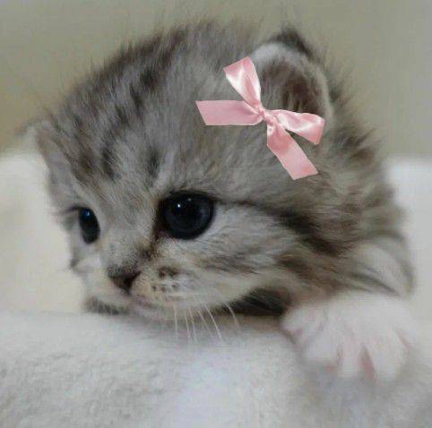
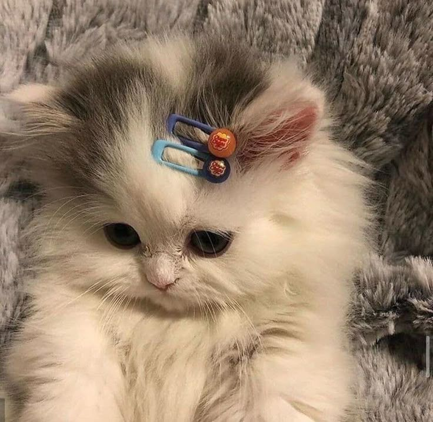
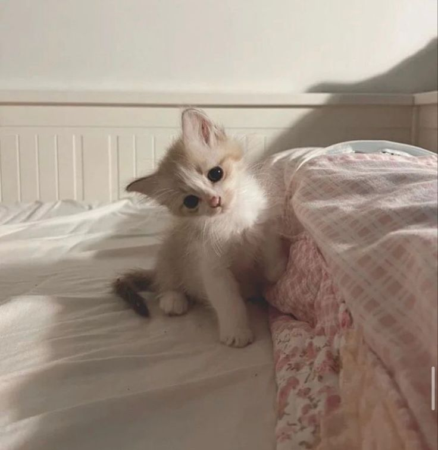
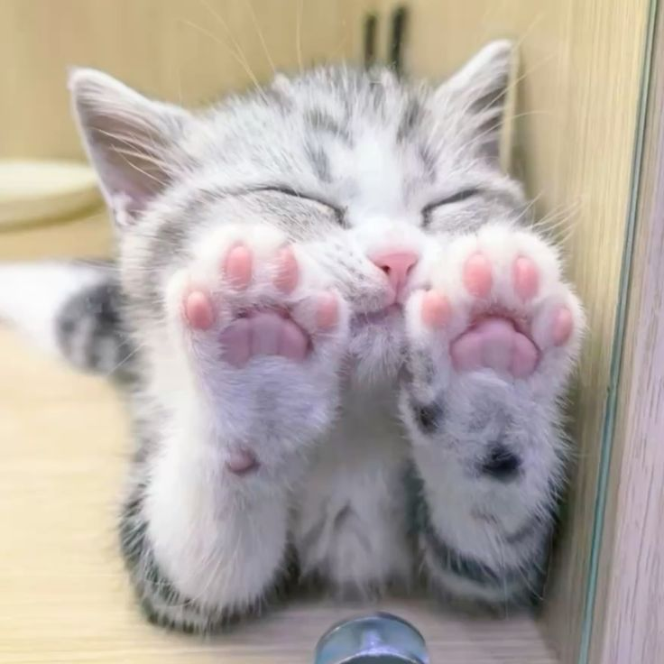

People's best friends
Cute pussy cats

Is there anything cuter than a cat?
Whether it’s a fresh-faced kitten or a kindly old senior cat, we just can’t seem to resist them. Cute cats are everywhere, from your TikTok FYP to heartwarming news stories (and who could forget the hold they had on the internet in the 2000s?), but what is it about cats that makes them so adorable?
As we’ll find out, there’s actually some science behind it. Yep, science itself confirms that cats are cute – and here’s why.
Cats are perceived as cute due to baby schema traits like large eyes, small noses, and soft fur, which trigger our evolutionary caregiving instincts, and by their infantile behaviors such as playfulness and affection. Their soft fur and purrs also make them physically appealing, while their subtle, loving interactions foster a strong human-feline bond.
Love cats!!!
Love cats!